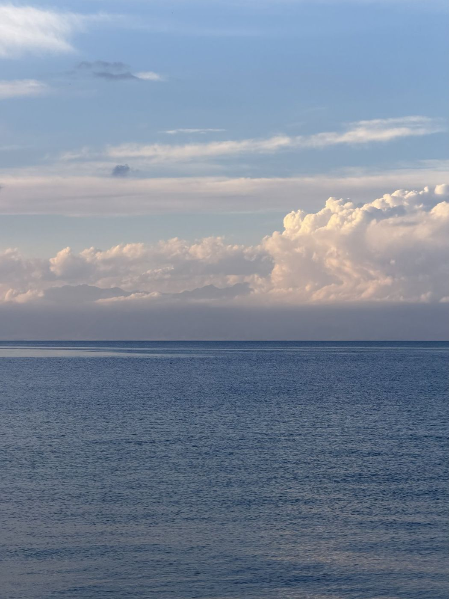
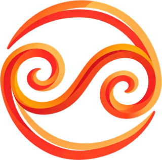
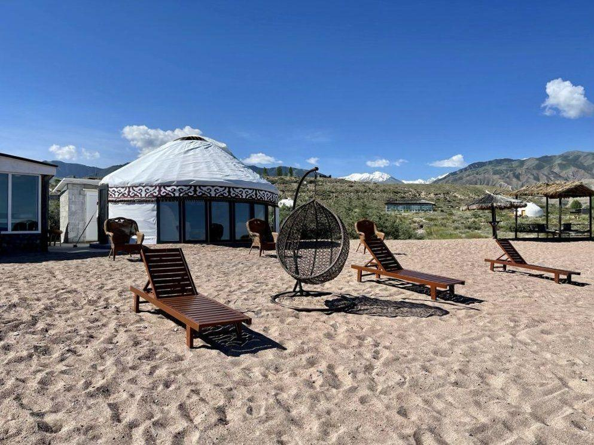
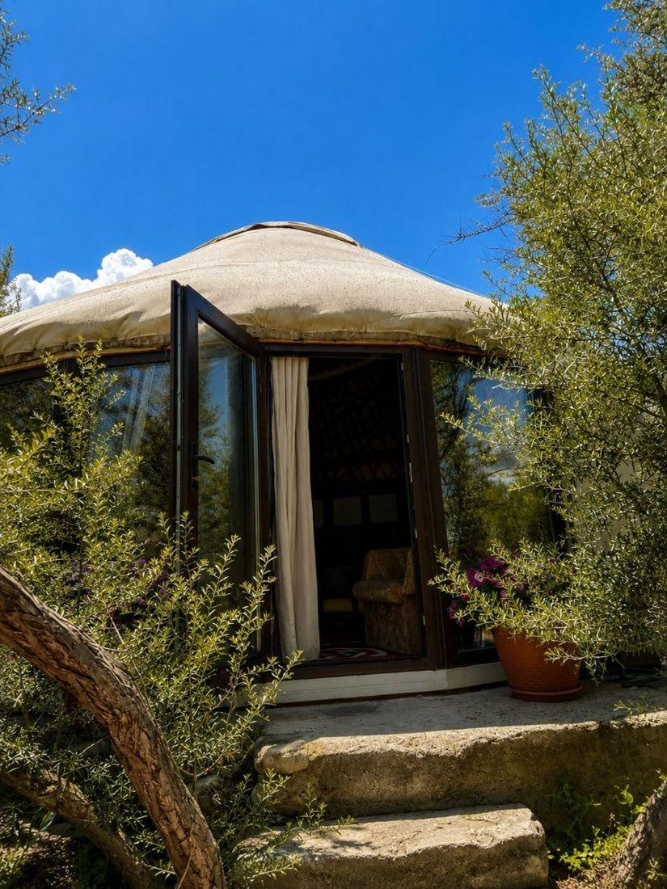
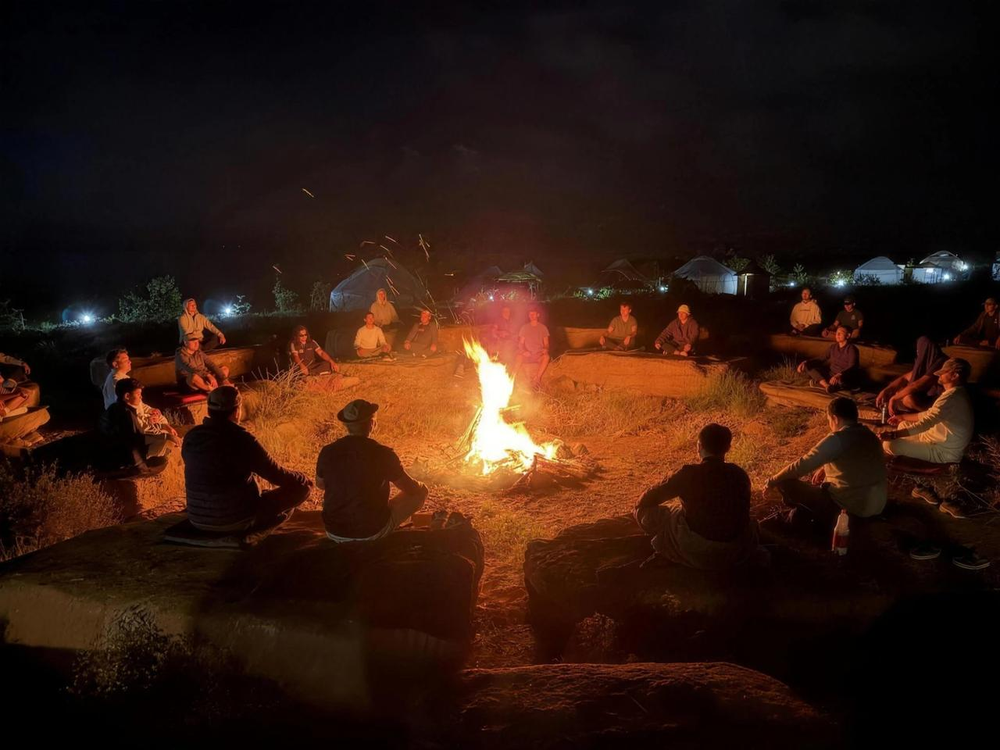
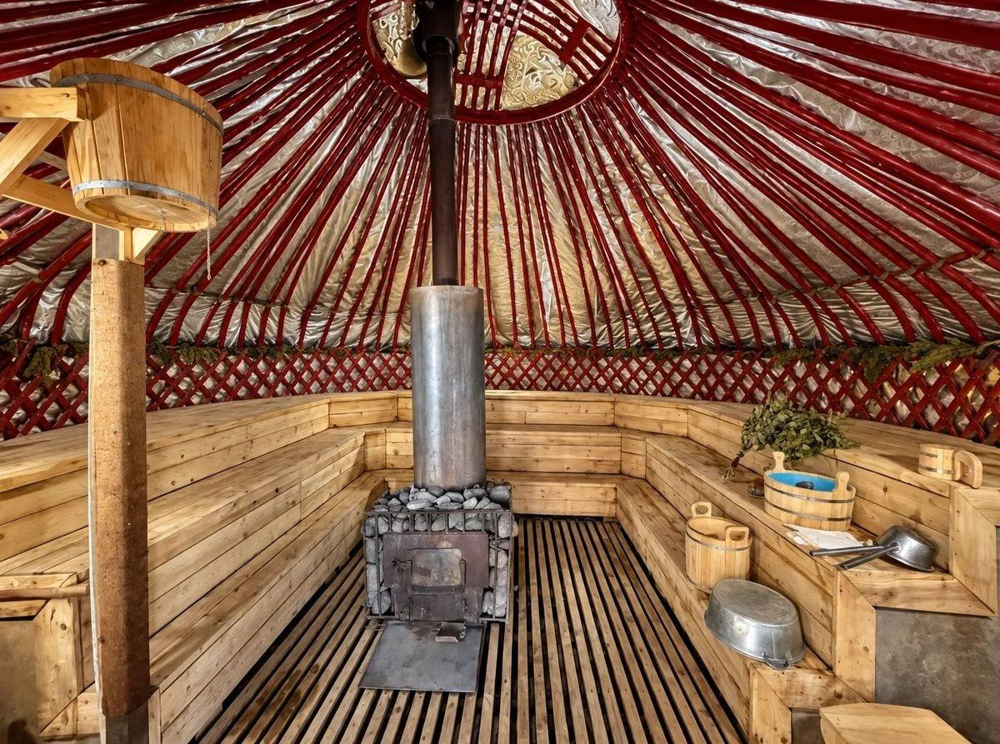
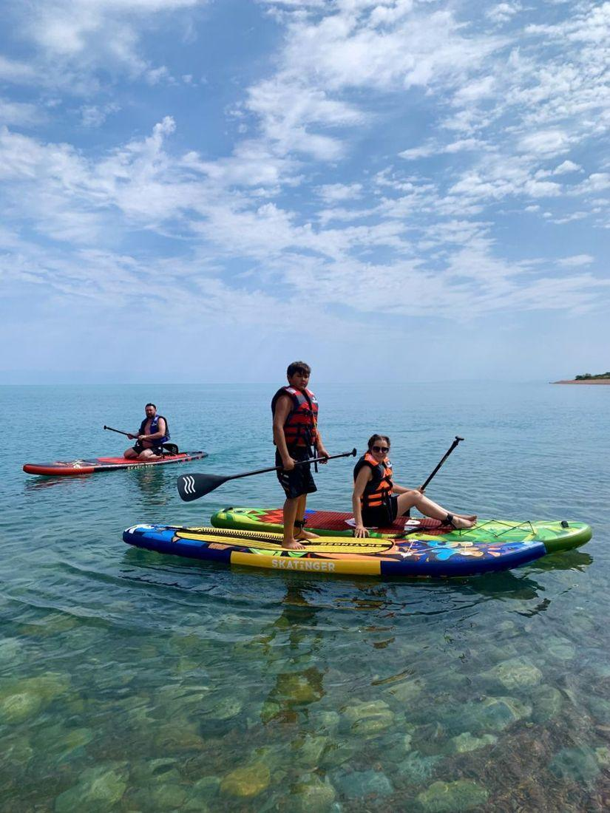
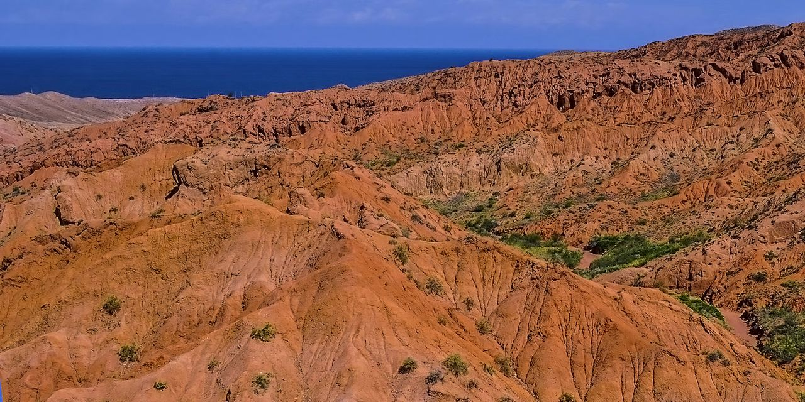
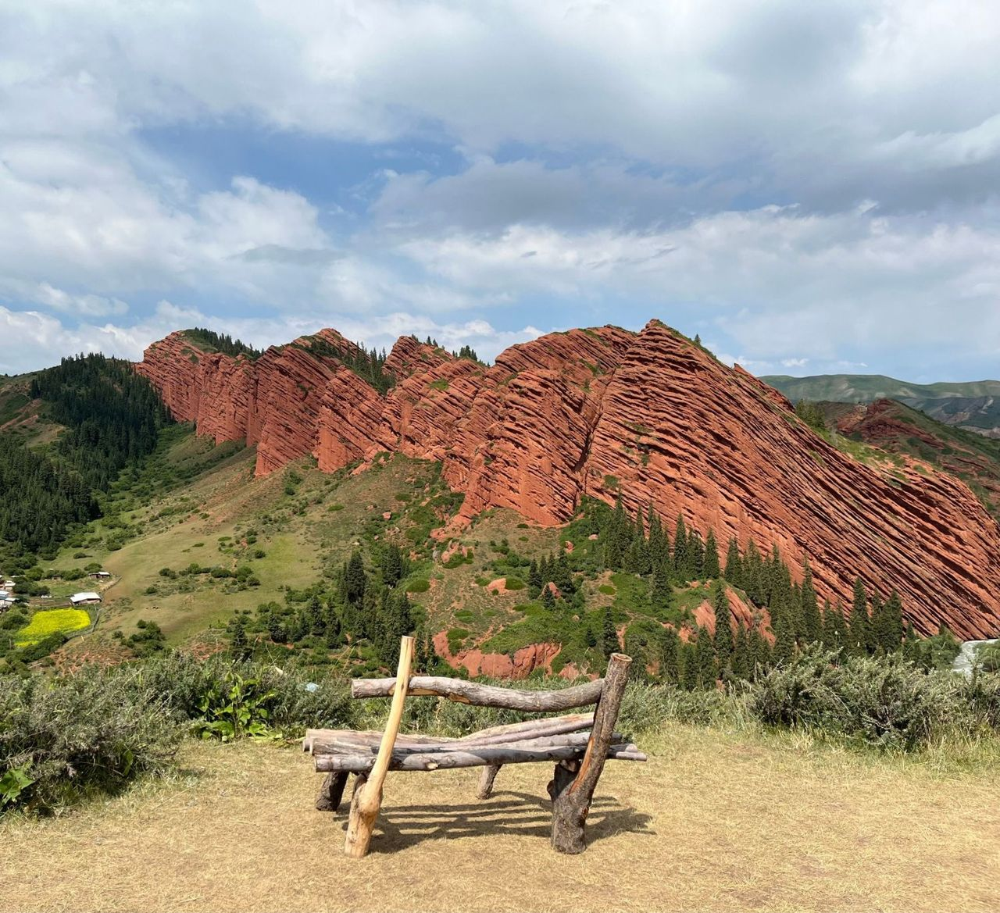

Юрточный резорт на южном берегу Иссык-Куля
Иссык-Куль · село Тосор

Место для Ак-Тенгира было выбрано не случайно: с одной стороны его окружают горы, а с другой — жемчужина Кыргызстана, озеро Иссык-Куль. Благодаря этому здесь особенно тихо, уединённо и свободно.
Первые десять лет сюда можно было попасть только по личному приглашению. Сегодня двери Ак-Тенгира открыты для всех.

от классической юрты до этно-дома с собственной террасой

Работаем круглый год: утепляем юрты и делаем тёплые санузлы, сохраняя аутентику пространства.
Escape the noise. Reconnect with yourself.

Можем полностью закрыть территорию под вашу группу. Приезжайте со своей программой — или доверьте её создание нам.

в 5–10 метрах от воды
Горячая парная и предбанник с большими витражными окнами на Иссык-Куль. В предбаннике — чай с местным чабрецом, сезонные фрукты и сладости.
Сеанс — 2,5 часа.
Каждое утро печём свежий хлеб, готовим национальные блюда на открытом огне. Большая часть того, что выращивает наш сад и огород, возвращается на стол гостей.

Сапборды и рыбалка по запросу, плетёные кресла в тени, бар с кофе и лимонадами, кальян у озера вечером.
Поможем найти такси, организуем трансфер и подберём тур по южному берегу.

